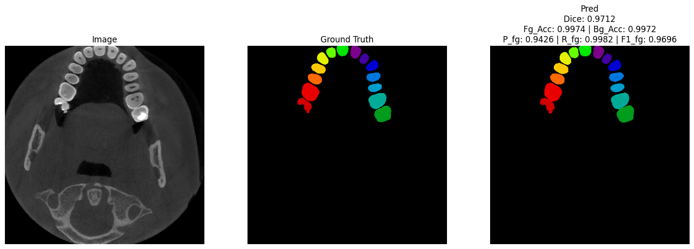
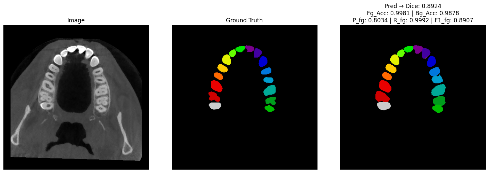
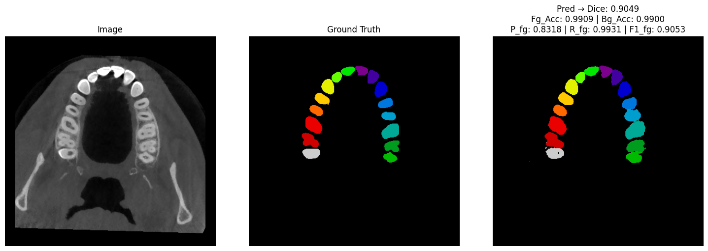
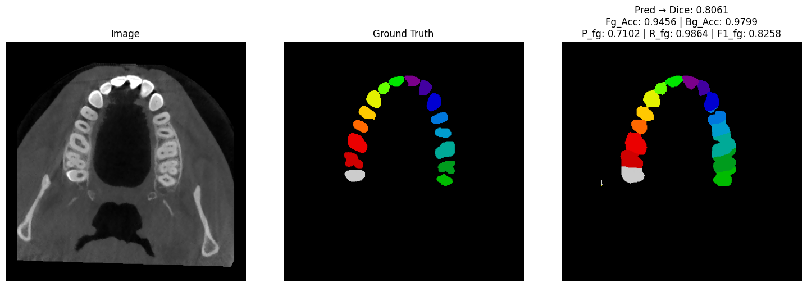
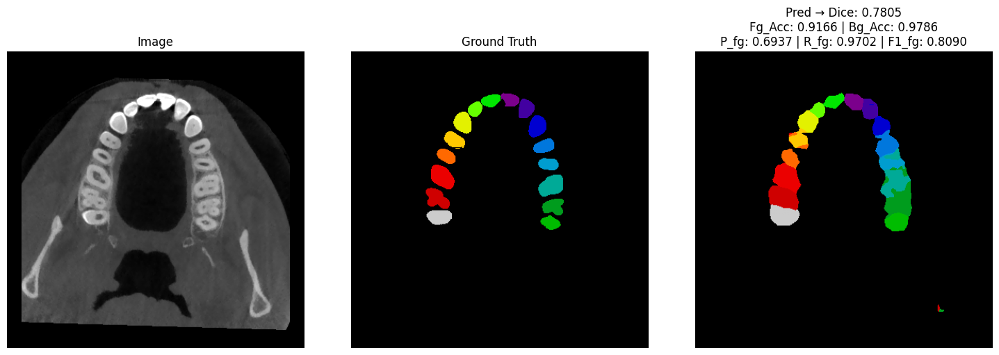

Özet
Dental bilgisayarlı tomografi (BT) görüntülerinden dişlerin doğru segmentasyonu, diş hekimliğinde klinik tanı ve tedavi planlamasında kritik bir rol oynar. Ancak geleneksel segmentasyon yöntemleri, özellikle eksik dişler veya mevcut protetik restorasyonlar gibi karmaşık durumlarda sınırlarına ulaşır. Derin öğrenme yöntemleri giderek daha fazla kullanılsa da dental BT görüntülerine özgü segmentasyon modellerini kapsamlı biçimde karşılaştıran çalışmalar sınırlıdır. Bu çalışma, UNet, SegNet, BASNet, BiSeNet, DenseASPP ve Mask R-CNN gibi çeşitli derin öğrenme mimarilerini sistematik olarak karşılaştırarak bu boşluğu doldurmayı amaçlamaktadır. Modellerin performansı, bu çalışma için oluşturulan 2B bir veri seti üzerinde Dice Benzerlik Katsayısı (DSC), precision, recall ve F1-skoru ile nicel olarak değerlendirilmiştir. Sonuçlar, farklı modellerin net bir değerlendirmesini sunarak klinisyenler ve araştırmacılar için uygun model seçiminde yol gösterici olmakta ve dental görüntüleme alanındaki gelecek çalışmalar için temel bir referans oluşturmaktadır.
Yöntem
- Veri: MICCAI 2024 ToothFairy2 veri seti (480 CBCT hacmi, 42 sınıf). 3B eğitimin donanım sınırlarını aşması nedeniyle hacimlerden seçilen aksiyel kesitlerle yeni bir 2B veri seti oluşturuldu.
- Hedef: Üst çenedeki 16 diş (FDI 11–18, 21–28) + arka plan; ilgisiz bölgeler kayıp hesabından çıkarıldı. Bölünme: %80 eğitim, %10 doğrulama, %10 test.
- Modeller: UNet, SegNet, BASNet, BiSeNetV2, DenseASPP ve Mask R-CNN; hepsi aynı koşullarda eğitildi.
- Kayıp: Cross-Entropy + Dice (α = β = 1), ters sınıf frekansına dayalı sınıf ağırlıklarıyla.
- Eğitim: Adam (lr 1e-4), batch 8, karma hassasiyet (GradScaler), en fazla 50 epoch, sabır değeri 10 olan erken durdurma; döndürme, ölçekleme ve yansıtma ile veri artırma.
Sonuçlar
| Model | Dice | Fg Acc | Bg FP Rate ↓ | Precision | Recall | F1 |
|---|---|---|---|---|---|---|
| BASNet | 0.7610 | 0.8882 | 0.0076 | 0.7740 | 0.9272 | 0.8270 |
| UNet | 0.7400 | 0.8742 | 0.0082 | 0.7651 | 0.9219 | 0.8200 |
| SegNet | 0.7031 | 0.8872 | 0.0097 | 0.7379 | 0.9379 | 0.8101 |
| DenseASPP | 0.6135 | 0.8697 | 0.0131 | 0.6784 | 0.9454 | 0.7740 |
| BiSeNetV2 | 0.5414 | 0.7181 | 0.0150 | 0.6553 | 0.9268 | 0.7507 |
Test setindeki sonuçlara göre BASNet, sınır farkındalıklı (boundary-aware) yapısı sayesinde en yüksek Dice ve F1 skorlarına ulaştı. UNet ve SegNet onu yakından izledi. BiSeNetV2 ve DenseASPP ince anatomik ayrıntılarda zayıf kaldı. Mask R-CNN yoğun incelemeye rağmen bu veri setini öğrenemedi ve değerlendirmeye alınamadı. Ayrıca kademeli encoder açmaya dayanan fine-tuning stratejisi, baştan tam eğitime göre avantaj sağlamadı.
Örnek Segmentasyonlar

BASNet

UNet

SegNet

DenseASPP
